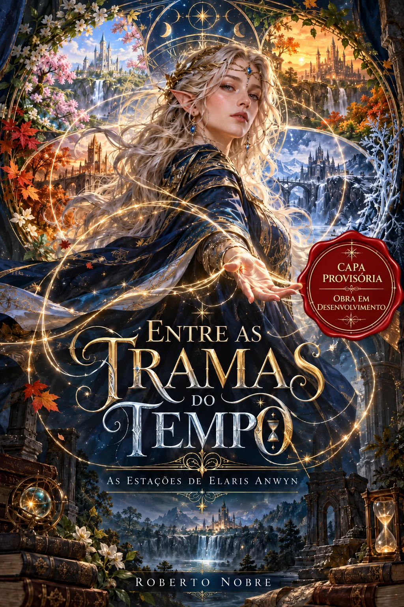

Universo de Elaris Anwyn
Entre as Tramas do Tempo — As Estações de Elaris Anwyn
Por Roberto Nobre · Núcleo Elaris Anwyn

Projeto experimental Obra em desenvolvimento Escrita pausada
Esta é uma edição pública experimental da história de Elaris Anwyn. A escrita está pausada e os capítulos precisam de revisão editorial. A leitura preserva a versão de trabalho, incluindo repetições, alternativas e notas de planejamento. Nenhuma passagem foi retirada editorialmente. A seção final reúne material adicional na ordem em que aparece no original.
Capa provisória aprovada: a arte está disponível nesta edição. O conteúdo literário segue em desenvolvimento e sujeito a revisão.
Marcações experimentais: Versão a conferir = capítulo com número repetido; Repetição literal = parágrafo longo idêntico; Nota de planejamento = indicação explícita de trabalho editorial. Nenhuma marcação determina o texto canônico.
Prévia pública experimental. Trechos repetidos ou de planejamento permanecem disponíveis para futura classificação editorial, sem alteração da fonte.